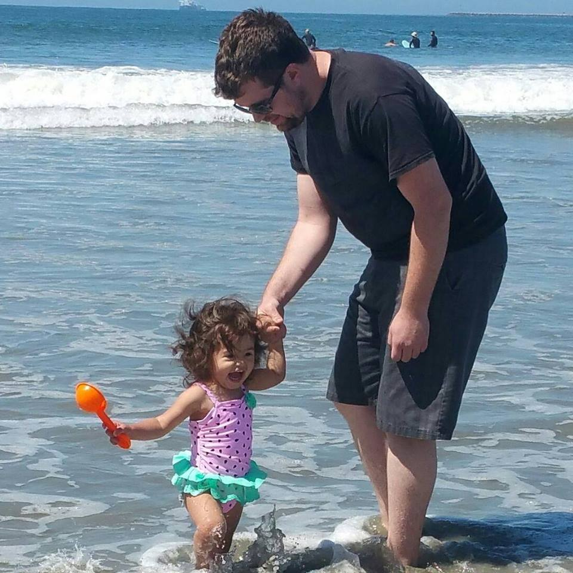

About

Max Schmelling has a B.S. in Game Software Development where he gained a foundation in graphics programming. After obtaining his degree, he acquired a paid internship as a technical writer and quickly transitioned into quality assurance. Max then found another job in QA where he gained much more experience in the qa process. He is now working on his coding skills so that he can break into a software development role.
Connect with Me